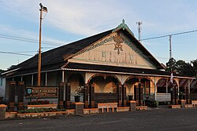
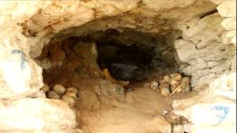
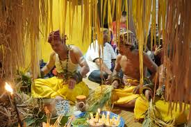
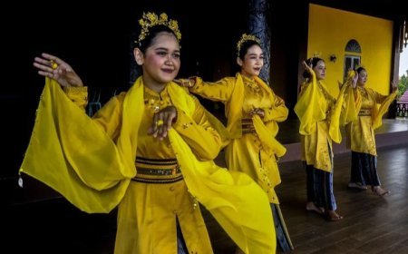
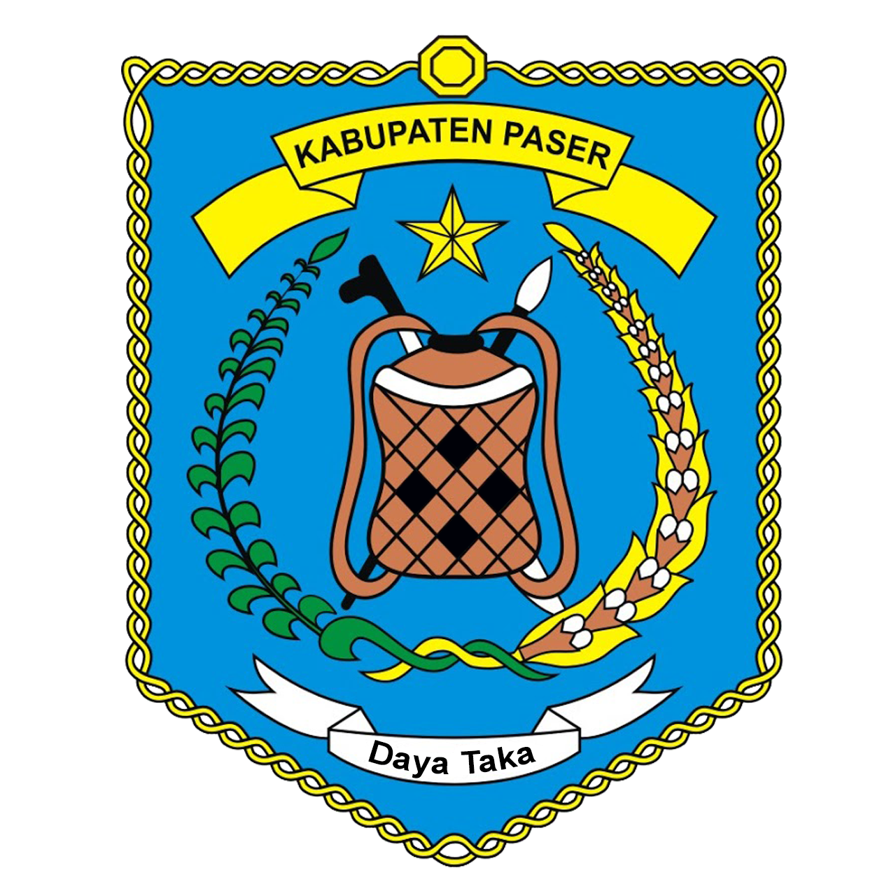
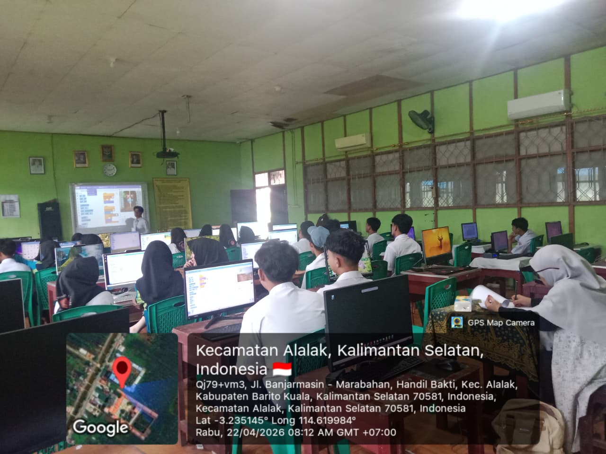
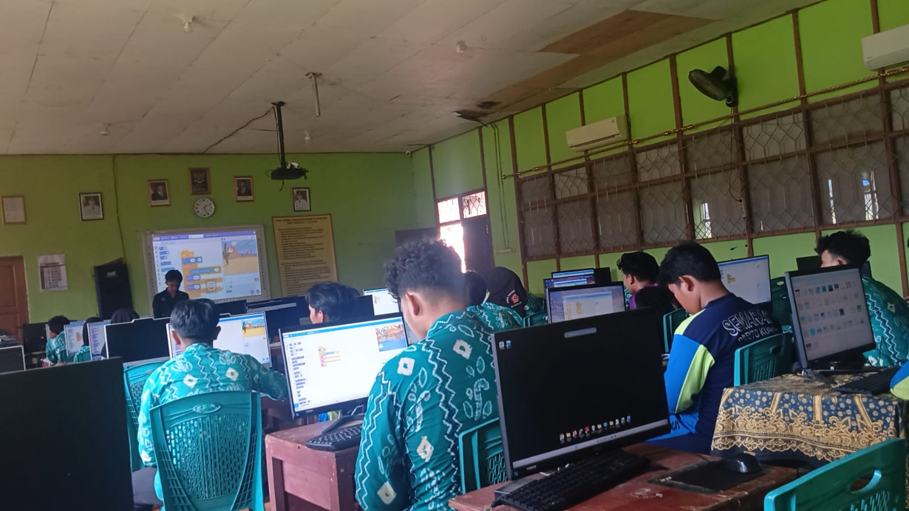
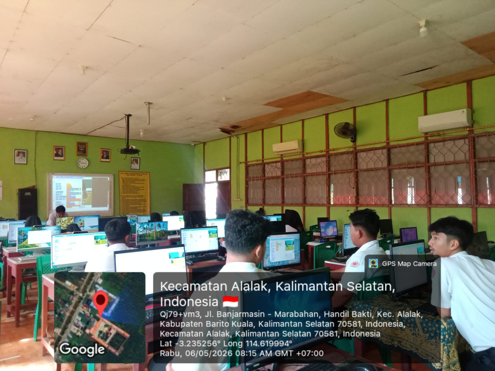

Muhammad Insan Kamil — Mengakar di Paser
Saya lahir dan besar di Kabupaten Paser, Kalimantan Timur, sebuah daerah yang kaya akan tradisi, bahasa daerah, dan kearifan lokal. Dari kecil saya tumbuh dalam lingkungan yang menjunjung tinggi gotong royong, yang kemudian membentuk karakter tekun dan kolaboratif dalam setiap langkah saya. Setelah menyelesaikan pendidikan S1 Informatika di Institut Teknologi Kalimantan, saya memantapkan hati untuk mengabdi di dunia pendidikan sebagai guru Informatika.
🏞️ Keunikan Kabupaten Paser

Kerajaan Sadurengas (Kesultanan Pasir)
Kesultanan Pasir berdiri pada abad ke-16 (sekitar tahun 1516 Masehi). Penguasa pertamanya adalah seorang ratu bernama Aji Putri Petong yang dinobatkan pada usia 22 tahun. Pusat kerajaan ini berada di tepi Sungai Kendilo, yang menjadi cikal bakal Kabupaten Paser saat ini.

Goa Tengkorak Paser
Situs Cagar Budaya yang terletak di tebing kapur Desa Kasungai, Kecamatan Batu Sopang, Kabupaten Paser. Penelitian dari Universitas Gadjah Mada (UGM) menemukan 35 tengkorak dan 170 tulang belulang manusia di dalam goa. Temuan ini dikaitkan dengan masa Kerajaan Sadurengas.
Gunung Embun (Saing Boga)
Secara resmi bernama Gunung Boga, berlokasi di Desa Luan, Kecamatan Muara Samu, Kabupaten Paser. Gunung ini menduduki peringkat ketiga dari 10 nominasi Anugerah Pesona Indonesia (API) Award 2020 Kementerian Pariwisata untuk kategori Dataran Tinggi Terpopuler di Indonesia. Dikenal dengan julukan "Negeri di Atas Awan" karena pemandangan kabut tebal di pagi hari.

Upacara Adat Belian
Ritual adat Suku Paser yang berfungsi sebagai pembersihan kampung (tolak bala) dan syukuran. Belian Nondoi adalah jenis Belian dengan tingkatan tertinggi yang telah dilakukan sejak masa Kesultanan Paser dan berlangsung selama 7 hingga 8 malam. Pemerintah Kabupaten Paser rutin menggelar Festival Belian Adat Paser Nondoi setiap tahun sebagai wujud pelestarian budaya dan promosi wisata.

Tari Ronggeng Paser
Tarian tradisional yang awalnya bernama Ngarang (berarti "menari bersama"), merupakan ungkapan kegembiraan dan rasa syukur masyarakat usai panen padi. Perubahan nama menjadi Ronggeng Paser terjadi setelah masa kemerdekaan, dipengaruhi oleh interaksi perdagangan dengan saudagar dari Malaysia dan Singapura. Tarian ini diiringi musik gambus, gendang Paser, gong, dan gerincai.

Filosofi "Olo Manin Aso Buen Si Olo Ndo"
Semboyan resmi Kabupaten Paser dalam bahasa Paser yang berarti "Hari esok harus lebih baik dari hari sekarang". Maknanya adalah semangat untuk terus berinovasi dan memperjuangkan kehidupan yang lebih baik, namun tetap berpegang teguh pada akar budaya.
Inspirasi & Tujuan Menjadi Guru Profesional
Saya percaya salah satu cara menemukan kebahagiaan adalah dengan membantu orang lain. Setiap kali saya berbagi pengetahuan dan melihat seseorang yang awalnya bingung menjadi paham, saya merasakan kepuasan yang tidak bisa diukur dengan materi. Mengajar adalah cara saya untuk terus berbuat baik melalui ilmu yang saya miliki.
📖 Konteks Pembelajaran & Istilah Teknis
Lokasi & Kelas: Saya melaksanakan Praktik Pengalaman Lapangan (PPL) terbimbing di SMAN 1 Alalak, Kabupaten Barito Kuala, Kalimantan Selatan. Kelas yang menjadi subjek praktik adalah kelas XI semester genap tahun ajaran 2025/2026.
Mata Pelajaran & Materi: Mata pelajaran Informatika dengan capaian pembelajaran mencakup Berpikir Komputasional, Literasi Digital, Analisis Data, serta Algoritma dan Pemrograman. Pada saat saya melaksanakan kegiatan PPL, fokus materi berada pada Algoritma dan Pemrograman, dengan sub materi pokok Pengkondisian (Percabangan) menggunakan lingkungan pemrograman visual Scratch.
Definisi Teknis
- Scratch: Platform pemrograman visual berbasis blok yang dikembangkan MIT. Memungkinkan siswa membuat program dengan menyusun blok-blok perintah seperti puzzle, cocok untuk pemula.
- Pengkondisian (Conditional / if-else): Struktur kontrol yang memungkinkan program mengambil keputusan berdasarkan suatu syarat. Jika syarat terpenuhi (true), maka blok perintah di dalamnya dijalankan.
- If Paralel: Beberapa blok if yang ditulis terpisah, satu per satu. Komputer akan mengecek semua kondisi secara berurutan setiap saat, meskipun beberapa kondisi mungkin tidak relevan.
- Nested If (If Bersarang): Struktur pengkondisian di mana satu blok if berada di dalam blok if atau else lainnya. Lebih efisien karena komputer hanya mengecek kondisi seperlunya (jika kondisi pertama sudah terpenuhi, kondisi lainnya tidak dicek).
Alur Praktik Pembelajaran Terbimbing (3 Siklus)
Siklus 1
22 April 2026
Kelas XI-6
Discovery Learning
Siklus 2
29 & 30 April 2026
Kelas XI-7
Uji awal + PBL if paralel
Siklus 3
6 Mei 2026
Kelas XI-7
Nested if (PBL)
Data hasil belajar diambil dari Siklus 2 (uji awal dan PBL if paralel) dan Siklus 3 (nested if).
📁 Artefak & Analisis Praktik Mengajar
Berikut adalah rubrik penilaian yang digunakan untuk menilai project Scratch yang dikerjakan siswa pada Siklus 2 dan Siklus 3. Rubrik ini mengukur dua aspek: Logika Pengkondisian dan Kesesuaian Output Visual, dengan skala 1–4. Data ketuntasan yang disajikan (7,69% → 84,62% → 100%) diperoleh dari hasil penilaian menggunakan rubrik ini pada Siklus 2 dan Siklus 3.
Rubrik Penilaian Produk (Project Scratch)
Setiap project dinilai berdasarkan dua aspek dengan skala 1–4, kemudian dikonversi ke nilai 0–100. KKM = 75. Rubrik ini digunakan pada Siklus 2 (uji kompetensi dan project PBL) dan Siklus 3 (project nested if).
| Aspek | Skor 4 (Sangat Baik) | Skor 3 (Baik) | Skor 2 (Cukup) | Skor 1 (Perlu Bimbingan) |
|---|---|---|---|---|
| Logika Pengkondisian | Seluruh kondisi berfungsi benar, logika percabangan dan syarat jarak sesuai (termasuk nested if) | Seluruh kondisi berfungsi benar, tetapi ada kekurangan (misal: if paralel, belum nested) | Hanya sebagian kecil kondisi yang berfungsi benar; banyak kesalahan logika | Tidak ada kondisi yang berfungsi atau tidak menggunakan pengkondisian |
| Kesesuaian Output Visual | Output sesuai sepenuhnya dengan visual contoh | Sebagian besar output sesuai, 1–2 detail kecil kurang tepat | Hanya sekitar setengah output sesuai; banyak ketidakcocokan | Output tidak menyerupai contoh visual |
Rumus Nilai: (Skor Logika + Skor Kesesuaian Visual) × 100 / 8
Siklus 1 – Kelas XI-6 (22 April 2026)
Discovery LearningKonteks: Mengajar di kelas XI-6 dengan materi pengantar variabel dan pengkondisian. Model yang digunakan adalah Discovery Learning. Pertemuan ini juga menjadi bahan monitoring Dosen Pembimbing Lapangan.

📌 Analisis Artefak Siklus 1
Kendala: Model Discovery Learning yang diterapkan belum terstruktur dengan baik. Siswa cenderung pasif karena tidak ada masalah autentik yang memantik eksplorasi. Scaffolding yang diberikan belum cukup untuk membantu siswa yang kesulitan, terlihat dari banyaknya siswa yang hanya meniru tanpa memahami konsep.
Teori Pedagogi: Discovery Learning (Bruner) menekankan pembelajaran melalui penemuan mandiri. Namun, tanpa panduan yang cukup, siswa kesulitan menghubungkan variabel dan pengkondisian. Hal ini menunjukkan pentingnya scaffolding (Vygotsky) dan pendekatan problem-based untuk pemrograman, yang kemudian menjadi dasar peralihan ke PBL pada siklus berikutnya.
Faktor Keberhasilan: Meskipun hasil belajar rendah, identifikasi awal bahwa siswa belum memahami konsep dasar pengkondisian menjadi modal berharga. Catatan DPL dan refleksi diri memberikan arah perbaikan yang jelas untuk siklus selanjutnya.
Perubahan untuk Kelas Berbeda: Jika menghadapi kelas dengan kemampuan awal yang lebih beragam, saya akan mempertimbangkan untuk menerapkan PBL sejak awal dengan masalah yang lebih sederhana, serta menyediakan video tutorial dan lembar kerja terstruktur. Hal ini bertujuan untuk membantu siswa yang membutuhkan bimbingan ekstra tanpa mengurangi tantangan bagi siswa yang lebih siap.
Siklus 2 – Kelas XI-7 (29 & 30 April 2026)
29 April – Uji Kompetensi Awal (pra tindakan)
Mekanisme:
- Soal visual: Guru menampilkan program Scratch yang sudah jadi (hanya tampilan, tanpa kode). Program tersebut menampilkan dua sprite yang berjalan berlawanan arah. Saat kedua sprite hampir bertabrakan, sprite pertama harus melompati sprite kedua.
- Tugas siswa: Siswa membuat ulang program tersebut dari awal tanpa melihat
kode. Mereka harus menambahkan logika pengkondisian (
if-else) untuk mengatur kondisi tabrakan dan lompatan. - Penilaian: Menggunakan rubrik produk yang sama dengan Siklus 3 (Lihat rubrik di atas), yaitu dua aspek: Logika Pengkondisian dan Kesesuaian Output Visual, dengan skala 1–4.
Video 1: Tampilan visual soal yang ditampilkan ke siswa (tanpa kode)
Contoh tampilan program yang harus dibuat ulang oleh siswaHasil: Ketuntasan hanya 7,69% (1
dari 13 siswa tuntas),
rata-rata nilai 45,19. Hal ini menunjukkan pemahaman awal siswa terhadap if-else
masih sangat rendah.
Berikut contoh hasil pekerjaan siswa pada uji kompetensi awal, yang menggambarkan variasi tingkat pemahaman siswa terhadap pengkondisian:
❌ Nilai Terendah — Siswa A (25)
- Logika Pengkondisian: 1 (Tidak menggunakan pengkondisian)
- Kesesuaian Output Visual: 1 (Output tidak menyerupai visual contoh)
⚠️ Nilai Sedang — Siswa B (50)
- Logika Pengkondisian: 1 (Tidak menggunakan pengkondisian)
- Kesesuaian Output Visual: 3 (Sebagian besar output sesuai, 1–2 detail kurang tepat)
✅ Nilai Tertinggi — Siswa C (87,5)
- Logika Pengkondisian: 4 (Menerapkan pengkondisian dengan benar)
- Kesesuaian Output Visual: 3 (Sebagian besar output sesuai, 1–2 detail kurang tepat)
30 April – PBL (if paralel)
Mekanisme:
- Latihan (Project 1): Siswa memodifikasi kode awal yang memiliki dua kondisi
berdasarkan jarak antara
mouse-pointer(kursor) dan sprite:- Kondisi awal 1: Jika jarak < 150, sprite mengatakan "Dekat!"
- Kondisi awal 2: Jika jarak ≥ 150, sprite mengatakan "Jauh!"
if-elsedan cara menambahkan kondisi baru dengan blokifdi Scratch. - Tugas mandiri (Project 2): Siswa membuat ulang program tiga
kondisi dari tampilan visual yang ditampilkan guru tanpa diberikan kode.
Berikut visual yang ditampilkan guru:Visual program tiga kondisi yang harus dibuat ulang oleh siswa (tanpa kode)
Siswa harus membuat kode agar outputnya serupa dengan program yang ditampilkan guru
Spesifikasi program (berdasarkan jarak kursor terhadap sprite):- Kondisi 1: Jarak kursor < 50 → sprite mengatakan "Ada Penyusup!" + backdrop Castle 1
- Kondisi 2: 50 ≤ Jarak kursor < 150 → sprite mengatakan "Siapa itu?" (backdrop tetap)
- Kondisi 3: Jarak kursor ≥ 150 → sprite mengatakan "Situasi Aman" + backdrop Castle 3
ifdengan operator perbandingan dan blokdistance to mouse-pointeruntuk mengecek jarak tersebut. - Penilaian: Menggunakan rubrik yang sama dengan Siklus 3 (lihat rubrik di atas). Project 2 dinilai berdasarkan dua aspek: Logika Pengkondisian dan Kesesuaian Output Visual.
Berikut contoh hasil pekerjaan siswa pada Project 2 (Siklus 2, if paralel):
 Kode Project 2 - Siswa D
Kode Project 2 - Siswa D
❌ Nilai Terendah — Siswa D (50)
- Logika Pengkondisian: 2 (Hanya sebagian kondisi yang berfungsi)
- Kesesuaian Output Visual: 2 (Hanya sekitar setengah output sesuai)
 Kode Project 2 - Siswa E
Kode Project 2 - Siswa E
⚠️ Nilai Sedang — Siswa E (75)
- Logika Pengkondisian: 3 (Seluruh kondisi berfungsi, tapi if paralel)
- Kesesuaian Output Visual: 3 (1–2 detail kurang tepat, backdrop tidak berubah sesuai spesifikasi)
 Kode Project 2 - Siswa F
Kode Project 2 - Siswa F
✅ Nilai Tertinggi — Siswa F (87,5)
- Logika Pengkondisian: 3 (Tiga kondisi berfungsi benar, if paralel)
- Kesesuaian Output Visual: 4 (Output sesuai sepenuhnya)

Hasil: Ketuntasan meningkat menjadi 84,62% (11 dari 13 siswa
tuntas), rata-rata nilai 78,85. Seluruh siswa yang tuntas berhasil membuat program tiga kondisi
dengan benar, namun semuanya masih menggunakan tiga blok if
terpisah (if paralel) — belum ada yang menerapkan struktur nested if.
📌 Analisis Artefak Siklus 2
Kendala: Meskipun ketuntasan meningkat signifikan (84,62%), seluruh siswa masih menggunakan tiga blok if paralel. Belum ada yang menerapkan nested if karena konsep efisiensi kode belum diperkenalkan. Selain itu, dua siswa belum tuntas dan memerlukan pendampingan ekstra.
Teori Pedagogi: PBL (Arends, 2012) terbukti efektif meningkatkan keterlibatan siswa melalui masalah autentik. Scaffolding yang diberikan secara bertahap membantu siswa membangun pemahaman dari modifikasi kode sederhana hingga tugas mandiri. Namun, tahap analisis dan evaluasi (fase 5) belum sepenuhnya menggali pemikiran kritis siswa tentang efisiensi kode.
Faktor Keberhasilan: Perubahan dari Discovery Learning ke PBL memberikan dampak positif. Siswa lebih aktif dalam trial & error dan diskusi. Strategi penyajian kode guru untuk dibandingkan dengan hasil siswa terbukti efisien dan tetap melibatkan siswa secara kognitif. Landrop memudahkan pengumpulan tugas. PBL meningkatkan keterlibatan dan hasil belajar secara drastis dibandingkan uji kompetensi awal.
Perubahan untuk Kelas Berbeda: Jika menghadapi kelas dengan waktu yang lebih terbatas, pendekatan guru menyajikan contoh dan siswa membandingkan dapat menjadi pilihan yang efisien. Namun, untuk kelas dengan siswa yang masih kurang percaya diri, saya akan mempertimbangkan untuk menyisipkan sesi presentasi singkat secara sukarela agar keterampilan komunikasi tetap terasah. Sementara untuk siswa yang belum tuntas, saya menyadari bahwa pendampingan tambahan di luar jam pelajaran menjadi hal yang perlu disiapkan sejak awal.
Siklus 3 – Nested If (6 Mei 2026, Kelas XI-7)
Mekanisme: Fokus pada nested if (if bersarang).
- Latihan (Project 1): Siswa mengonversi kode tiga kondisi if paralel (dari Siklus 2) menjadi struktur nested if. Tujuan latihan ini adalah mengenalkan efisiensi komputasi dengan mengurangi jumlah pengecekan kondisi.
- Tugas mandiri (Project 2): Siswa membuat program baru dengan sprite
Referee dari tampilan visual yang ditampilkan guru tanpa diberikan kode.
Disarankan menggunakan nested if (satu blok
if-elseutama, denganifdi dalamnya).
Berikut visual yang ditampilkan guru:Visual program Referee tiga kondisi yang harus dibuat ulang oleh siswa (tanpa kode)
Siswa harus membuat kode agar outputnya serupa dengan program yang ditampilkan guru
Spesifikasi program (berdasarkan jarak kursor terhadap sprite Referee):- Kondisi 1: Jarak kursor < 50 → sprite mengatakan "Pelanggaran!" + kostum referee-a
- Kondisi 2: 50 ≤ Jarak kursor < 150 → sprite mengatakan "Jangan Mendekat!" + kostum referee-c
- Kondisi 3: Jarak kursor ≥ 150 → sprite mengatakan "Tetap Disana!" + kostum referee-d
if-elsebersarang dan blokdistance to mouse-pointeruntuk mengecek jarak secara bertingkat. - Penilaian: Menggunakan rubrik yang sama dengan Siklus 2 (lihat rubrik di atas). Project 2 dinilai berdasarkan dua aspek: Logika Pengkondisian dan Kesesuaian Output Visual. Skor maksimal 4 diberikan jika siswa berhasil menerapkan nested if.
Berikut contoh hasil pekerjaan siswa pada Project 2 (Siklus 3, nested if):
 Kode Project 2 - Siswa G
Kode Project 2 - Siswa G
❌ Nilai Terendah — Siswa G (75)
- Logika Pengkondisian: 3 (Tiga kondisi berfungsi benar, tapi masih menggunakan if paralel)
- Kesesuaian Output Visual: 3 (1–2 detail kurang tepat, perubahan kostum dari sprite seharusnya berbeda di setiap kondisi)
 Kode Project 2 - Siswa H
Kode Project 2 - Siswa H
⚠️ Nilai Sedang — Siswa H (87,5)
- Logika Pengkondisian: 4 (Menerapkan nested if dengan benar)
- Kesesuaian Output Visual: 3 (1–2 detail kurang tepat, tiap kondisi tidak disertai perubahan kostum dari sprite)
 Kode Project 2 - Siswa I
Kode Project 2 - Siswa I
✅ Nilai Tertinggi — Siswa I (100)
- Logika Pengkondisian: 4 (Menerapkan nested if dengan sempurna)
- Kesesuaian Output Visual: 4 (Output sesuai sepenuhnya)

Hasil: Ketuntasan mencapai 100% (13 dari 13 siswa tuntas), rata-rata nilai = 84,62. Sebagian besar siswa memperoleh skor logika 4 karena berhasil menerapkan nested if, yang menunjukkan pemahaman akan efisiensi komputasi.
📌 Analisis Artefak Siklus 3
Kendala: Masih ada beberapa siswa yang menggunakan if paralel meskipun output benar, sehingga skor logika pengkondisian belum sempurna. Alokasi waktu untuk bimbingan dirasa cukup, tetapi siswa yang kurang mahir tetap memerlukan pendampingan lebih intensif.
Teori Pedagogi: Nested if mengajarkan efisiensi komputasi dan logika bertingkat. PBL fase analisis dan evaluasi mendorong siswa membandingkan struktur if paralel vs nested if, sehingga mereka tidak hanya belajar membuat program yang benar, tetapi juga yang efisien. Ini sejalan dengan tujuan berpikir komputasional (Computational Thinking) dalam Kurikulum Merdeka. Perbandingan langsung if paralel vs nested if membuat siswa memahami bahwa program dapat bekerja lebih efisien (lebih sedikit pengecekan kondisi).
Faktor Keberhasilan: Perbandingan langsung kode paralel dan nested if membuat siswa memahami konsep efisiensi secara konkret. Ketuntasan 100% menunjukkan bahwa pendekatan bertahap (dari modifikasi → konversi → tugas mandiri) efektif. Partisipasi siswa meningkat karena mereka sudah memiliki bekal dari siklus sebelumnya. PBL fase analisis mendorong refleksi kritis.
Perubahan untuk Kelas Berbeda: Untuk kelas dengan siswa yang lebih cepat memahami materi, saya akan menyiapkan tantangan tambahan (misalnya menambahkan kondisi keempat dengan nested if) agar mereka tetap tertantang. Sebaliknya, untuk kelas dengan siswa yang membutuhkan waktu lebih lama, saya akan menyediakan video tutorial sebagai sumber belajar mandiri atau memperpanjang alokasi waktu bimbingan. Saya juga belajar bahwa dokumentasi kode hasil konversi siswa dapat dimanfaatkan sebagai portofolio dan bahan diskusi di pertemuan berikutnya, terutama untuk kelas yang lebih kolaboratif.
📊 Perbandingan Hasil Belajar (13 siswa)
Tabel di bawah ini menunjukkan peningkatan rata-rata nilai dan persentase ketuntasan siswa dari uji kompetensi awal hingga Siklus 3 setelah penerapan model PBL berbantuan Scratch.
| Siklus / Pertemuan | Rata-rata Nilai | Ketuntasan Klasikal |
|---|---|---|
| Siklus 2 (Uji awal, 29 April) | 45,19 | 7,69% (1 siswa) |
| Siklus 2 (PBL if paralel, 30 April) | 78,85 | 84,62% (11 siswa) |
| Siklus 3 (Nested if, 6 Mei) | 84,62 | 100% (13 siswa) |
Data diambil dari 13 siswa yang hadir pada seluruh rangkaian pembelajaran.

Grafik peningkatan rata-rata nilai dari Siklus 2 ke Siklus 3

Grafik peningkatan persentase ketuntasan dari Siklus 2 ke Siklus 3
📋 Instrumen Penilaian (GP & DPL)
Berikut dokumentasi penilaian dari Guru Pamong (Gusti Fredy Abdillah, S.Kom.) untuk tiga siklus praktik terbimbing, serta Lembar Kunjungan Dosen Pembimbing Lapangan (Dr. R. Ati Sukmawati, M.Kom.).
Penilaian GP – Siklus 1
Penilaian modul ajar dan praktik mengajar untuk pembelajaran tanggal 22 April 2026 (Kelas XI-6).

Penilaian GP – Siklus 2
Penilaian modul ajar dan praktik mengajar untuk pembelajaran tanggal 30 April 2026 (Kelas XI-7).

Penilaian GP – Siklus 3
Penilaian modul ajar dan praktik mengajar untuk pembelajaran tanggal 6 Mei 2026 (Kelas XI-7).

Lembar Kunjungan DPL
Lembar monitoring dan catatan dari Dosen Pembimbing Lapangan pada kunjungan tanggal 22 April 2026 di kelas XI-6.

🚀 Refleksi Akhir & Filosofi Mengajar
Refleksi Akhir Praktik Pengalaman Lapangan Terbimbing
1. Apa yang telah saya pelajari?
Selama menjalani PPL Terbimbing, saya belajar banyak hal yang tidak bisa saya peroleh dari teori saja. Saya belajar bahwa menjadi guru bukan hanya tentang menyampaikan materi, tetapi tentang bagaimana menciptakan lingkungan belajar yang aman dan menantang bagi siswa. Saya menyadari pentingnya memahami karakteristik siswa terlebih dahulu sebelum menentukan model pembelajaran. Pengalaman mengajar di kelas XI-6 dengan Discovery Learning mengajarkan saya bahwa tanpa masalah autentik, siswa cenderung pasif dan hanya meniru tanpa memahami konsep. Dari situlah saya belajar untuk beralih ke PBL, yang terbukti lebih efektif dalam meningkatkan keterlibatan dan hasil belajar siswa. Saya juga belajar bahwa refleksi diri dan keterbukaan terhadap masukan dari DPL dan GP adalah kunci perbaikan yang berkelanjutan.
2. Pengalaman menantang dan solusinya
Tantangan terbesar yang saya hadapi adalah ketika menerapkan Discovery Learning pada pertemuan pertama. Siswa kesulitan menghubungkan variabel dengan pengkondisian karena saya tidak memberikan scaffolding yang cukup dan masalah yang saya sajikan kurang kontekstual. Banyak siswa yang hanya meniru langkah demi langkah tanpa benar-benar memahami konsep. Solusi yang saya ambil adalah mengubah pendekatan menjadi Problem Based Learning (PBL) dengan menyajikan masalah autentik yang relevan dengan kehidupan sehari-hari siswa. Saya juga memberikan scaffolding bertahap, mulai dari modifikasi kode sederhana hingga tugas mandiri yang lebih kompleks. Pada siklus berikutnya, saya juga belajar untuk memodifikasi fase sajian; daripada meminta semua siswa presentasi, saya menyajikan contoh kode dan meminta siswa membandingkan dengan hasil kerja mereka. Ini lebih efisien dan tetap melibatkan siswa secara kognitif.
3. Umpan balik untuk PPL Mandiri
Dari diskusi refleksi akhir dengan Guru Pamong dan Dosen Pembimbing Lapangan, saya mendapatkan beberapa masukan berharga. Pertama, saya perlu lebih memperhatikan diferensiasi pembelajaran, terutama dalam mengelola waktu untuk siswa dengan kecepatan belajar yang berbeda. Kedua, keterampilan presentasi siswa perlu diasah secara bertahap, misalnya dengan menyisipkan sesi presentasi singkat secara sukarela di setiap pertemuan. Ketiga, saya disarankan untuk menyiapkan video tutorial dan lembar kerja terstruktur sebagai sumber belajar mandiri bagi siswa yang membutuhkan bimbingan ekstra. Keempat, saya perlu terus mendokumentasikan proses dan hasil belajar siswa sebagai portofolio dan bahan refleksi. Masukan ini akan saya bawa ke PPL Mandiri sebagai fondasi untuk merancang pembelajaran yang lebih adaptif dan berpusat pada siswa.
Filosofi Mengajar
Saya percaya bahwa setiap siswa memiliki potensi untuk belajar dan berkembang, hanya saja cara dan kecepatan mereka berbeda-beda. Sebagai guru, tugas saya bukanlah menjadi satu-satunya sumber pengetahuan, tetapi menjadi fasilitator yang membimbing siswa menemukan pemahaman mereka sendiri. Keyakinan ini berakar pada teori konstruktivisme yang menekankan bahwa pengetahuan dibangun oleh individu melalui interaksi dengan lingkungan dan pengalaman. Dalam konteks pemrograman, saya melihat bahwa siswa akan lebih memahami konsep pengkondisian jika mereka sendiri yang mengeksplorasi, mencoba, dan menemukan pola dari kode yang mereka tulis, bukan sekadar menghafal sintaks.
Saya memegang prinsip bahwa kesalahan adalah bagian tak terpisahkan dari proses belajar. Saya berusaha menciptakan ruang kelas di mana siswa tidak takut untuk mencoba dan gagal, karena dari kegagalan itulah mereka belajar paling banyak. Nilai yang saya junjung adalah rasa ingin tahu dan keberanian untuk bertanya. Saya terinspirasi oleh teori scaffolding Vygotsky, yang mengajarkan bahwa bimbingan yang tepat dari guru atau teman sebaya dapat membantu siswa mencapai pemahaman yang lebih tinggi daripada jika mereka belajar sendiri. Oleh karena itu, saya selalu memberikan scaffolding secara bertahap, mulai dari contoh konkret, kemudian latihan terbimbing, hingga tugas mandiri yang menantang.
Pengalaman PPL Terbimbing telah memperkuat keyakinan saya bahwa pembelajaran yang bermakna terjadi ketika siswa dihadapkan pada masalah autentik dan diberi kebebasan untuk mengeksplorasi solusi. Saya juga belajar bahwa menjadi guru profesional berarti terus belajar dan beradaptasi. Setiap siklus yang saya lalui, dari Discovery Learning yang kurang efektif hingga PBL yang membawa perubahan signifikan, adalah bukti bahwa refleksi dan perbaikan adalah kunci. Ke depan, saya berkomitmen untuk terus mengembangkan pendekatan pembelajaran yang humanis, kontekstual, dan berbasis teknologi, dengan tetap mengutamakan kebutuhan dan karakteristik siswa. Saya ingin menjadi guru yang tidak hanya mengajarkan materi, tetapi juga menumbuhkan rasa ingin tahu dan kemandirian belajar siswa.
Dokumentasi Kegiatan PPL Terbimbing

Siklus 1 (22 April 2026)

Siklus 2 (30 April 2026)

Siklus 3 (6 Mei 2026)